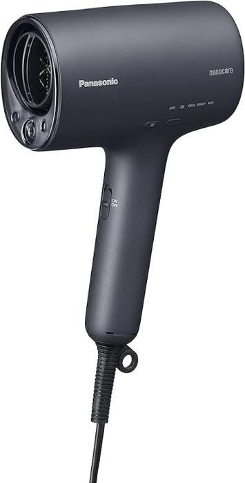

パナソニックのナノケアドライヤーを使い始めて数日経った。 購入前に要件としていた、風が強くてコンパクトというのは完全に達成できている。軽いのも良い。高かったとは思うが、長く使うものだし基本満足している。

このドライヤーには5つのモードがある。 1つ目は温風が出続けるモード。おそらくどのドライヤーにもあるだろう。 2つ目は、温風と冷風が自動で交互に出るモード。 3つ目は冷風のみ。 4つ目はスカルプモードで、頭皮を乾かすものらしい。これは温風と冷風の中間くらいのぬるい風が出る。 最後がスキンモードといって、ナノイーとミネラルが含まれた風を顔に当てることで肌の潤いケアができるもの。弱めの風が出る。これを1分顔にあてると良いらしい。
この2つ目がまず良い。いい感じのタイミングで温度が切り替わってくれて助かる。 私は髪に詳しくはないが、ドライヤーというのは、温風を当てることで効率的に髪を乾かすことはできるものの傷みやすくなるというトレードオフをいかに最適化するか、というゲームだと捉えている。したがって、そこそこのタイミングで自動で冷風に切り替えてしまうのはいいバランスの実装なのではないかと思う。実際乾くまでの時間もそんなに変わらないような気はする。
スカルプモードに関しては、よくわからない。これは正直使ってない。 ドライヤーを使うとき、髪の根元を乾かすべきとよく言われる。ここで言う髪の根元がイコール頭皮だとすると、まずこれで頭皮を乾かし、その後モード2に切り替えて毛先等を乾かすのがいいのか？もしかしたらこれは髪が長い人向けの機能なのかもしれない。私のように髪があまり長くない人は、根元を乾かせばついでに髪全体もいい感じに乾くので、細かいことを考えても仕方ないかも。
スキンモードはよくわからん。最後に1分くらい顔に風を浴びせてる自分に滑稽さを覚えなくもない。かえって肌が乾燥するのでは？という気もする。もう少し続けてみるが。